Physical Object
Author: Takin.solutions Ltd.
Version: 1.0
Physical Object
A physical object, including works of houses, ships, goods, and other valuables.
| Name | URI | |
|---|---|---|
| Root Ontology Node | E18 Physical Object | https://cidoc-crm.org/Entity/E18-Physical-Object/version-7.1.1 |
| Type Differentiator | N/A | N/A |
| Filed ID | Name | Description | Data Type | CRM Path |
|---|---|---|---|---|
| LAF.6 | Name | This field is used to record the string value of the name attributed to the documented physical object. | String | ->p1->E33_E41[4_1]->p190->rdf:literal |
| LAF.5 | Name Type | This field is used to record the type of the name attributed to the documented physical object. | Concept | ->p1->E33_41[4_1]->p2->E55[5_1] |
| LAF.7 | Name Language | This field is used to record the language of the name attributed to the documented physical object. | Concept | ->p1->E33_E41[4_1]->p72->E56[7_1] |
| LAF.44 | Source Reference Work for Name | This field is used to link to a source text in which the name denoting the documented physical object is used. | Reference Model [DHIM.5_Legal Document] | ->p1->E33_E41[4_1]->p67i->E33[44_1] |
| LAF.11 | Type | This field is used to record the formal type of the documented physical object. | Concept | ->p2->E55[11_1] |
| LAF.12 | Meta-type | This field is used to record the metatype attributed to a formal classification. The function of a metatype is to enable the programmatic distinction between different kinds of type applied to the same documented entity. | Concept | ->p2->E55[11_1]->p2->E55 [12_1] |
| LAF.15 | Statement | This field is used to record the actual textual content of the statement describing the documented physical object. | String | ->p67i->E33[13_1]->p190->rdf:literal |
| LAF.14 | Statement Type | This field is used to record the formal type of the statement made about the documented physical object. | Concept | ->p67i->E33[13_1]->p2->E55[14_1] |
| LAF.16 | Statement Language | This field is used to record the language of the statement describing the documented physical object. | Concept | ->p67i->E33[13_1]->p72->E56[16_1] |
| LAF.55 | Source Reference Work for Statement | This field is used to link to a source text from which the statement describing the documented physical object is derived. | Reference Model [DHIM.5_Legal Document] | ->p67i->E33[13_1]->p67i->E33[55_1] |
| LAF.10 | Identifier | This field is used to record an identifier attributed to the documented physical object. | String | ->p1->E42[8_1]->p190->rdf:literal |
| LAF.9 | Identifier Type | This field is used to record the type of the identifier attributed to the documented physical object. | Concept | ->p1->E42[8_1]->p2->E55[9_1] |
| DHIF.5 | former or current owner | This field is used to link the documented physical object with an instance of person or group that is its former or current owner, without reference to the timespan of that ownership. | Reference Model [DHIM.1_Person; DHIM.2_Group] | ->P51->E39[DHIF.5_1] |
| DHIF.4 | former or current location | This field is used to link the documented physical thing with the instance of place that stands as its former or current location. | Reference Model [DHIM.3_Place] | ->p53->E53[DHIF.4_1] |
| LAF.302 | TimeSpan of Production Event | This field is used to link the documented production activity to an instance of time-span recording the temporal extent of the activity. | Collection [LAP.21_Production] | ->P108i->E12[295_1]->P4->E52[302_1] |
| LAF.236 | Timespan of Destruction Event | This field is used to link the documented event of destruction to an instance of time-span recording the temporal extent of the event. | Collection [LAP.21_Destruction] | ->P13i->E6[232_1]->P4->E52[236_1] |
| DHIF.6 | was used by | This field is used to link the documented physical object to an actor who used it in the exercise of a generic activity. | Reference Model [DHIM.1_Person; DHIM.2_Group] | ->P16i->E7[DHIF.6_1]->P14->E39[DHIF.6_2] |
| DHIF.70 | type of object use in activity | This field is used to record information related to the type of activity that the documented physical object was used for. | Concept | ->P16i->E7[DHIF.6_1]->P2->E55[DHIF.70_2] |
| LAF.39 | Source Reference Work | This field is used to link the documented physical object to an instance of textual work which references it. | Reference Model [DHIM.5_Legal Document] | ->p67i->E33[39_1] |
| PIRF.426 | Digital Reference | This field is used to link the documented physical object to a digital object, expressed as a uri, which describes it. | uri | ->P67i->D1[426_1] |
| PIRF.427 | Digital Reference Type | This field is used to indicate the type of a a digital object, expressed as a uri, which describes the documented physical object. | Concept | ->P67i->D1[426_1]->P2->E55[427_1] |
- Physical Object Ontology Graph
[to view the image right click 'open image in a new tab'] 
- Physical Object RDF
@prefix crm: <http://www.cidoc-crm.org/cidoc-crm/> .
@prefix rdfs: <http://www.w3.org/2000/01/rdf-schema#> .
<https://linked.art/example/models/object> a crm:E22_Human-Made_Object ;
crm:P108i_was_produced_by <https://linked.art/example/event/295_1> ;
crm:P13i_was_destroyed_by <https://linked.art/example/event/232_1> ;
crm:P16i_was_used_for <https://linked.art/example/event/DHIF.6_1> ;
crm:P1_is_identified_by <https://linked.art/example/conceptual_object/4_1>,
<https://linked.art/example/conceptual_object/8_1> ;
crm:P2_has_type <https://linked.art/example/type/11_1> ;
crm:P52_has_current_or_former_owner <https://linked.art/example/actor/DHIF.5_1> ;
crm:P55_has_former_or_current_location <https://linked.art/example/place/DHIF.4_1> ;
crm:P67i_is_referred_to_by <https://linked.art/example/conceptual_object/13_1>,
<https://linked.art/example/conceptual_object/39_1>,
<https://linked.art/example/conceptual_object/426_1> .
<http://vocab.getty.edu/aat/300418049> a crm:E55_Type .
<http://vocab.getty.edu/page/aat/300404670> a crm:E55_Type ;
rdfs:label "preferred terms" .
<https://linked.art/example/actor/DHIF.5_1> a crm:E39_Actor .
<https://linked.art/example/actor/DHIF.6_2> a crm:E39_Actor .
<https://linked.art/example/conceptual_object/13_1> a crm:E33_Linguistic_Object ;
crm:P190_has_symbolic_content "Statement_string_content" ;
crm:P2_has_type <https://linked.art/example/type/14_1> ;
crm:P67i_is_referred_to_by <https://linked.art/example/statement/55_1> ;
crm:P72_has_language <https://linked.art/example/type/16_1> .
<https://linked.art/example/conceptual_object/39_1> a crm:E33_Linguistic_Object .
<https://linked.art/example/conceptual_object/426_1> a crm:D1_Digital_Object ;
crm:P2_has_type <https://linked.art/example/type/427_1> .
<https://linked.art/example/conceptual_object/4_1> a crm:E33_E41_Linguistic_Appellation ;
crm:P190_has_symbolic_content "Name_string_value" ;
crm:P2_has_type <http://vocab.getty.edu/page/aat/300404670> ;
crm:P67i_is_referred_to_by <https://linked.art/example/textual_object/44_1> ;
crm:P72_has_language <https://linked.art/example/type/7_1> .
<https://linked.art/example/conceptual_object/8_1> a crm:E42_Identifier ;
crm:P190_has_symbolic_content "Identifier_value_content" ;
crm:P2_has_type <https://linked.art/example/identifier/9_1> .
<https://linked.art/example/event/232_1> a crm:E6_Destruction ;
crm:P4_has_time-span <https://linked.art/example/time_span/236_1> .
<https://linked.art/example/event/295_1> a crm:E12_Production ;
crm:P4_has_time-span <https://linked.art/example/time_span/302_1> .
<https://linked.art/example/event/DHIF.6_1> a crm:E7_Activity ;
crm:P14_carried_out_by <https://linked.art/example/actor/DHIF.6_2> ;
crm:P2_has_type <https://linked.art/example/type/DHIF.70_1> .
<https://linked.art/example/identifier/9_1> a crm:E55_Type .
<https://linked.art/example/place/DHIF.4_1> a crm:E53_Place .
<https://linked.art/example/statement/55_1> a crm:E33_Linguistic_Object .
<https://linked.art/example/textual_object/44_1> a crm:E33_Linguistic_Object .
<https://linked.art/example/time_span/236_1> a crm:E52_Time-Span .
<https://linked.art/example/time_span/302_1> a crm:E52_Time-Span .
<https://linked.art/example/type/11_1> a crm:E55_Type ;
crm:P2_has_type <https://linked.art/example/type/12_1> .
<https://linked.art/example/type/12_1> a crm:E55_Type .
<https://linked.art/example/type/14_1> a crm:E55_Type ;
crm:P2_has_type <http://vocab.getty.edu/aat/300418049> .
<https://linked.art/example/type/16_1> a crm:E56_Language .
<https://linked.art/example/type/427_1> a crm:E55_Type .
<https://linked.art/example/type/7_1> a crm:E56_Language .
<https://linked.art/example/type/DHIF.70_1> a crm:E55_Type .
- Physical Object JSON-LD
{
"@context": "https://linked.art/ns/v1/linked-art.json",
"@graph": [
{
"id": "http://vocab.getty.edu/aat/300418049",
"type": "Type"
},
{
"id": "https://linked.art/example/statement/55_1",
"type": "LinguisticObject"
},
{
"id": "https://linked.art/example/type/16_1",
"type": "Language"
},
{
"id": "https://linked.art/example/actor/DHIF.6_2",
"type": "Actor"
},
{
"id": "https://linked.art/example/time_span/236_1",
"type": "TimeSpan"
},
{
"id": "https://linked.art/example/event/232_1",
"timespan": "https://linked.art/example/time_span/236_1",
"type": "Destruction"
},
{
"id": "https://linked.art/example/type/DHIF.70_1",
"type": "Type"
},
{
"id": "https://linked.art/example/conceptual_object/39_1",
"type": "LinguisticObject"
},
{
"id": "https://linked.art/example/textual_object/44_1",
"type": "LinguisticObject"
},
{
"id": "https://linked.art/example/time_span/302_1",
"type": "TimeSpan"
},
{
"id": "https://linked.art/example/actor/DHIF.5_1",
"type": "Actor"
},
{
"classified_as": [
"https://linked.art/example/type/11_1"
],
"crm:P52_has_current_or_former_owner": {
"id": "https://linked.art/example/actor/DHIF.5_1"
},
"crm:P55_has_former_or_current_location": {
"id": "https://linked.art/example/place/DHIF.4_1"
},
"destroyed_by": "https://linked.art/example/event/232_1",
"id": "https://linked.art/example/models/object",
"identified_by": [
"https://linked.art/example/conceptual_object/4_1",
"https://linked.art/example/conceptual_object/8_1"
],
"produced_by": "https://linked.art/example/event/295_1",
"referred_to_by": [
"https://linked.art/example/conceptual_object/426_1",
"https://linked.art/example/conceptual_object/39_1",
"https://linked.art/example/conceptual_object/13_1"
],
"type": "HumanMadeObject",
"used_for": [
"https://linked.art/example/event/DHIF.6_1"
]
},
{
"id": "https://linked.art/example/identifier/9_1",
"type": "Type"
},
{
"classified_as": [
"https://linked.art/example/identifier/9_1"
],
"content": "Identifier_value_content",
"id": "https://linked.art/example/conceptual_object/8_1",
"type": "Identifier"
},
{
"classified_as": [
"https://linked.art/example/type/12_1"
],
"id": "https://linked.art/example/type/11_1",
"type": "Type"
},
{
"id": "https://linked.art/example/type/12_1",
"type": "Type"
},
{
"classified_as": [
"https://linked.art/example/type/14_1"
],
"content": "Statement_string_content",
"id": "https://linked.art/example/conceptual_object/13_1",
"language": [
"https://linked.art/example/type/16_1"
],
"referred_to_by": [
"https://linked.art/example/statement/55_1"
],
"type": "LinguisticObject"
},
{
"carried_out_by": [
"https://linked.art/example/actor/DHIF.6_2"
],
"classified_as": [
"https://linked.art/example/type/DHIF.70_1"
],
"id": "https://linked.art/example/event/DHIF.6_1",
"type": "Activity"
},
{
"id": "https://linked.art/example/place/DHIF.4_1",
"type": "Place"
},
{
"id": "https://linked.art/example/type/427_1",
"type": "Type"
},
{
"_label": "preferred terms",
"id": "http://vocab.getty.edu/page/aat/300404670",
"type": "Type"
},
{
"classified_as": [
"https://linked.art/example/type/427_1"
],
"id": "https://linked.art/example/conceptual_object/426_1",
"type": "crm:D1_Digital_Object"
},
{
"classified_as": [
"http://vocab.getty.edu/aat/300418049"
],
"id": "https://linked.art/example/type/14_1",
"type": "Type"
},
{
"classified_as": [
"http://vocab.getty.edu/page/aat/300404670"
],
"content": "Name_string_value",
"id": "https://linked.art/example/conceptual_object/4_1",
"language": [
"https://linked.art/example/type/7_1"
],
"referred_to_by": [
"https://linked.art/example/textual_object/44_1"
],
"type": "Name"
},
{
"id": "https://linked.art/example/event/295_1",
"timespan": "https://linked.art/example/time_span/302_1",
"type": "Production"
},
{
"id": "https://linked.art/example/type/7_1",
"type": "Language"
}
]
}